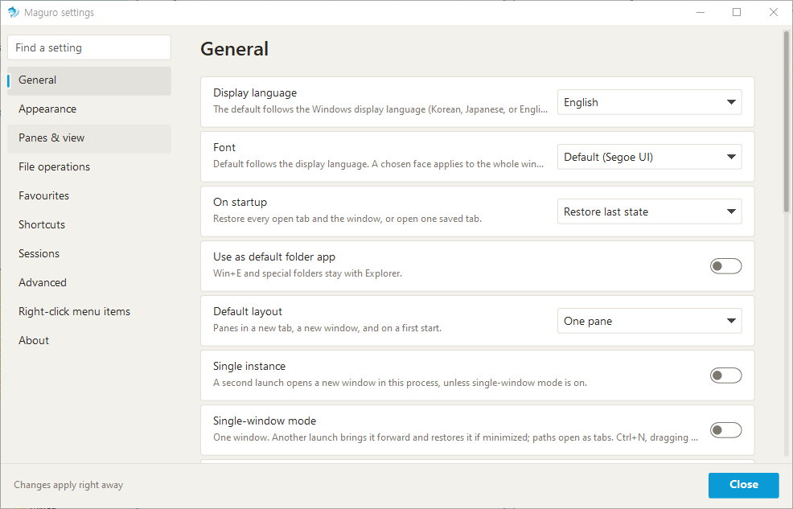
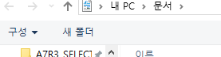

Maguro Help
Fast multi-pane file manager for Windows
Overview
Maguro is a multi-pane file manager for Windows.
Each pane shows one folder. Arrange panes side by side or in a grid to copy, move, and compare without a second program.
Start from the Start menu or the command line. Pass folder paths after maguro.exe, or open a .grids session file.
F1 opens this Help in the browser. Ctrl+/ opens the compact in-app shortcut list. Ctrl+, opens Settings.


Address bar & toolbar
Keys are listed once in Shortcuts.
The address bar is the current folder. Click a path segment to go there. Click a chevron to list folders inside.
Click the current folder, empty space, or use Address bar (see Shortcuts) to type a path.
The toolbar has Layout, Save, Open session, and Favourites. Drive letters can sit on the tab row.
The status bar shows the selection count and free space.
The ⇄ button opens the selected folder (or the current one) in another pane and keeps columns and view; or copies/moves selected files there (up to 10,000). With one pane it splits left–right. With nothing selected it duplicates the current folder.

Layouts & panes
Keys are listed once in Shortcuts.
A pane is one folder.
Click Layout for an even grid. Press and drag to set rows per column. Arrow keys and Enter work in that picker.
Double-click a splitter to split evenly. Drag a splitter to resize.
Limits: 4 columns, 4 rows in one column, 16 panes.
Ctrl+Shift+M or double-click a pane header maximises that pane; do it again to restore.


Move & duplicate panes
Drag a pane by its number or header.
Drop on an edge to split the target pane. Drop in the centre to swap.
Hold Ctrl while dragging to copy the current pane tab: an edge splits and keeps this pane; the centre adds a pane tab in that cell.
A red preview means the drop would pass the layout limit. Release Ctrl to move instead of copy.


Window tabs & sessions
Keys are listed once in Shortcuts.
Window tabs hold whole layouts: panes, folders, view, and colour labels.
Save writes this tab. A green dot on Save means the layout is unsaved (not ordinary file copies).
Open session opens a saved tab beside the current one. Opening several opens each as its own tab.
Ctrl+N opens another window. Single-window mode brings this window forward and opens paths as tabs. Single-instance keeps a later launch in this process.
See Shortcuts for New / Close / Next / Previous tab, Reopen closed tab, and Duplicate tab.

Pane tabs
Keys are listed once in Shortcuts.
Pane tabs are extra folders inside one pane. They are not window tabs.
With one folder the strip stays hidden. The button next to ⇄ adds a pane tab.
Middle-click or the small close mark closes a pane tab. Shortcuts for pane tabs work only while focus is in a pane.

Pane colours
Right-click a pane header to set a colour label.
The label is saved with the session and is separate from the window-tab colour.

Favourites & folder tree
Keys are listed once in Shortcuts.
Favourites and the folder tree share the left panel. Drag the divider between them. Settings chooses which is on top.
Click a favourite to open it in the active pane. Click a group to expand or collapse. Search keeps parent groups so you can see where a match sits.
Favourites can be folders or files. A missing folder shows a guide instead of opening an empty path.
The toolbar Favourites button opens a larger list: search, rename, delete, open in the active pane. Explorer pins can appear there too.
In the folder tree, Enter or double-click opens that folder in the pane. Ctrl-click or middle-click opens it as a pane tab.
Toggle the left panel from Shortcuts (Show the left panel).

Search
Ctrl+F searches this folder.
For deep subfolder search, install Everything and keep it running. Settings → General shows status and can install or start it.
Maguro asks Everything only while that program is running.

Preview & Quick look
Keys are listed once in Shortcuts.
F3 opens Quick look. Space does the same when Preview with Space is on (a space while typing or during IME stays part of the name).
In Quick look, Enter opens the file with its default app and closes the preview. Shift+Enter or right-click uses Open with.
Alt+P toggles the preview pane. The wheel can move to the next or previous file when that option is on.


File operations
Keys are listed once in Shortcuts.
Copy, cut, paste, rename, and delete match Explorer (see Shortcuts).
Del follows the Windows default (usually Recycle Bin). Shift+Del deletes permanently. Settings can confirm Del and set the default delete.
Drag between panes to copy or move. Same drive moves, other drives copy, unless Settings sets a default drag action. Drop on a folder row to put files inside it.
Fast copy (Settings → File operations) uses robocopy for network paste and drag, with Maguro progress and Cancel. It does not delete extra files at the destination. Off uses the Windows copy window. Local-only copies stay with Windows.
Ctrl+V with a picture on the clipboard saves a PNG in the current folder.
New folder and New text file are in Shortcuts. The new-file name comes from Settings.
Ctrl+Shift+O gathers the same selected names into the other panes.
Ctrl+Alt+C compares the active pane’s folder with the next pane in WinMerge. The gear menu and file list can compare two selected files, or one file with the same name in another pane. Set the WinMerge path under Settings → General.

Batch rename
Keys are listed once in Shortcuts.
Ctrl+Shift+R opens batch rename for the selection.
Add a prefix or suffix, replace text, and preview results before applying.

File Basket
Keys are listed once in Shortcuts.
Ctrl+Shift+B opens the File Basket, a small always-on-top window.
Drag items onto it, or Ctrl+Alt+B to add the active pane’s selection. Paths stay as originals.
Copy and Move into the active pane use the Windows progress window. Dragging out copies; Shift-drag moves. Remove and Clear change the list only.

Folder Watch
Keys are listed once in Shortcuts.
Ctrl+Shift+W opens Folder Watch.
Watch folders for changes and jump back when something appears or updates.

Clipboard path
Keys are listed once in Shortcuts.
Win+Shift+V opens a path that is on the clipboard in a new tab.
Turn the hotkey on or off under Settings → General.

Workspaces
Keys are listed once in Shortcuts.
Workspaces store up to nine named layouts (tabs, panes, folders).
Ctrl+Alt+1…9 loads a slot. Ctrl+Alt+Shift+1…9 saves into that slot.
The gear menu → Workspaces can save, load, rename, and clear slots. An empty slot shows a short message.
Loading replaces the current tabs. Maguro asks first only when Ask before loading is on.

Server connections
Connect to SMB, WebDAV, SFTP, and FTP. Connected servers appear as folders you can open, copy, and preview.
In the connection dialog pick the type, then enter address, port, user, and password. Passwords go to Windows credentials, not the settings file.
SMB uses Windows shares. WebDAV may need HTTPS. FTP uses the host and port you enter. SFTP needs rclone and WinFsp; Maguro can prompt to install them.
Disconnect when finished. Broken shares skip folder-size walks unless network folder sizes are on. If a network folder fails to open, press F5 and try again.

Office files
Excel and other Office files can open read-only when another app already has them.
Maguro keeps the list tidy so a locked workbook does not block browsing.

Theme & appearance
Settings → Appearance sets theme, accent colour, toolbar, drive buttons, and status bar.
Light and dark each keep their own accent. Follow Windows switches with the system.
After a theme change, folder lists pick up new colours the next time Maguro starts. The rest of the window updates immediately.
This Help page has its own Light / Dark / Auto control in the sidebar.

Settings
Ctrl+, opens Settings. Search jumps to a card whose title or description matches.
General — display language, font, what opens on startup, default folder app, default layout, single instance, single window, folders in Open/Save dialogs, clipboard-path hotkey, double-click empty space for parent folder, Everything, WinMerge.
Appearance — theme, accent, toolbar, drive buttons, status bar.
Panes & view — default view for a new pane, remember view per folder, default view for every folder, starting folder for a new pane, hidden files, extensions, folder sizes (including network), left panel and order, active pane border, preview pane, preview with Space, wheel next/previous.
File operations — Windows copy window, fast copy for network folders, confirm delete, default delete, new-file name, default drag and drop.
Favourites — left panel visibility and whether Favourites or the folder tree is on top.
Shortcuts — double-click a row and press new keys; Esc cancels; Reset restores the default. Conflicts are reported.
Sessions — session folder, save on exit, green-dot unsaved mark.
Advanced — check for updates on startup, settings file location, reset all settings. A portable.txt next to maguro.exe keeps settings beside the exe instead of AppData. Reset restores preferences; layout, folders, and favourites stay.
Right-click menu — third-party items and menu shape.
About — version and links.


Other window actions
Keys are listed once in Shortcuts.
Win+Shift+E brings Maguro to the front.
Ctrl+Alt+G jumps to a folder from a file dialog when that option is on.
F6 / Shift+F6 move focus. Ctrl+H toggles hidden files.
Select by pattern, Deselect by pattern, and Invert selection are in Shortcuts (Num+, Num−, Num*).
Copy full path and Show in folder are in Shortcuts.
Recent files is Ctrl+Alt+R. Recent folders is Alt+↓.

Shortcuts
Every Maguro chord is listed below. The same list opens in-app with Ctrl+/.
Change a chord in Settings → Shortcuts: double-click the row and press new keys. Esc cancels. Reset restores the default.
Changed chords show here after you rebuild or refresh this page from a build that reads live keys; the in-app list always follows Settings without a restart.
| Keys | Action |
|---|---|
| Tab | |
| Ctrl+T | New tab |
| Ctrl+W | Close tab |
| Ctrl+Tab | Next tab |
| Ctrl+Shift+Tab | Previous tab |
| Ctrl+Shift+T | Reopen closed tab |
| Ctrl+Alt+K | Duplicate tab |
| Pane | |
| Ctrl+PageDown | Next pane |
| Ctrl+PageUp | Previous pane |
| Ctrl+1…9 | Go to pane 1–9 |
| Pane tab | |
| Ctrl+Alt+T | New pane tab |
| Ctrl+Alt+W | Close pane tab |
| Ctrl+Alt+PageDown | Next pane tab |
| Ctrl+Alt+PageUp | Previous pane tab |
| Move | |
| Alt+Shift+← | Pane to the left |
| Alt+Shift+→ | Pane to the right |
| Alt+Shift+↑ | Pane above |
| Alt+Shift+↓ | Pane below |
| Ctrl+Alt+Shift+← | Swap with the pane to the left |
| Ctrl+Alt+Shift+→ | Swap with the pane to the right |
| Ctrl+Alt+Shift+↑ | Swap with the pane above |
| Ctrl+Alt+Shift+↓ | Swap with the pane below |
| Alt+← | Back |
| Alt+→ | Forward |
| Alt+↑ | Parent folder |
| Alt+↓ | Recent folders |
| Ctrl+L / Alt+D / F4 | Address bar |
| View | |
| Ctrl+F | Search this folder |
| F3 | Quick look |
| Alt+P | Preview pane |
| F6 | Next focus |
| Shift+F6 | Previous focus |
| Ctrl+H | Show hidden files |
| Ctrl+Shift+E | Show the left panel |
| Ctrl+Shift+O | Open Explorer folders |
| Ctrl+Alt+R | Recent files |
| Ctrl+Shift+M | Maximise / restore the pane |
| File | |
| Ctrl+Shift+C | Copy full path |
| Ctrl+Shift+R | Batch rename |
| Num+ / Ctrl+Shift+A | Select by pattern |
| Num− | Deselect by pattern |
| Num* | Invert selection |
| Ctrl+Alt+N | New text file |
| Ctrl+Shift+N | New folder |
| F7 | New folder in this pane |
| Ctrl+Alt+C | Compare folders in WinMerge |
| Ctrl+Shift+B | File Basket |
| Ctrl+Alt+B | Add selection to basket |
| Ctrl+Enter | Show in folder |
| Session | |
| Ctrl+S | Save this tab |
| Workspaces | |
| Ctrl+Alt+1…9 | Load workspace |
| Ctrl+Alt+Shift+1…9 | Save workspace |
| Favourites | |
| Ctrl+B | Favourites |
| Help | |
| Ctrl+, | Settings |
| F1 | Shortcut help |
| Ctrl+/ | Shortcut list |
| Window | |
| Win+Shift+E | Bring Maguro to the front |
| Ctrl+Alt+G | Jump to a folder in a file dialog |
| Win+Shift+V | Open clipboard path |
| Ctrl+N | New window |
| Ctrl+Shift+W | Folder Watch |
Mouse: layout button click/drag; address-bar chevrons; splitter double-click; pane-header right-click for colour; pane-tab middle-click to close.
Troubleshooting
Folder will not open — click the pane and press F5. F5 reloads the active pane from anywhere and retries a failed network folder.
Subfolder search finds nothing — install Everything, start it, and check Settings → General.
Network copy is slow or has no Maguro progress — turn on Fast copy for network folders. Off uses the Windows copy window. Fast copy does not run for a purely local copy.
WinMerge does not start — set its path under Settings → General. The pane must be a real folder for folder compare.
SFTP fails — install rclone and WinFsp when asked; check host, port, user, and password. WebDAV may need HTTPS. SMB uses a Windows share path. FTP uses the host and port from the connection.
Window theme changed but folder lists did not — restart Maguro. Lists take the theme at startup.
Crash last time — the next start shows where the report was written (crashes folder next to settings).
Second launch exits immediately — single instance or single window is on; the first window stays. An installable update replaces maguro.exe and restarts. A zip-only release is not extracted; replace maguro.exe when the update window says so.
Close with the window close button so Save on exit can write the session.